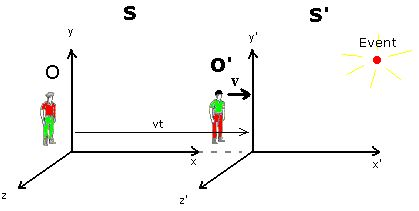

In special relativity, reference frames play a crucial role in understanding the theory. The term reference frame as used here is an observational perspective in space which is not undergoing any acceleration, from which a position can be measured along 3 spatial axes(x,y,z). In addition, a reference frame has the ability to determine measurements of the time of events. In the picture below we have two people looking at the same event, the only difference is that the one on the right is moving at constant velocity V. This causes two different frames of references S and S’, both frames seeing the event from different perspectives.
